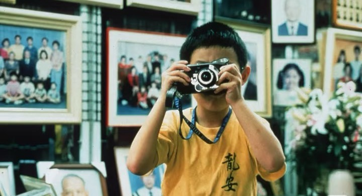

A演示夏行楷
连笔舒展，行楷的书写感更浓

我不知道的事情太多了，所以，你知道我以后想做什么吗？我要去告诉别人他们不知道的事，给别人看他们看不到的东西，我想，这样一定天天都很好玩。
四款均可免费用于网页，点击字体可单独查看。
连笔舒展，行楷的书写感更浓

我不知道的事情太多了，所以，你知道我以后想做什么吗？我要去告诉别人他们不知道的事，给别人看他们看不到的东西，我想，这样一定天天都很好玩。
笔势飘逸，转折和收笔更有个性
我不知道的事情太多了，所以，你知道我以后想做什么吗？我要去告诉别人他们不知道的事，给别人看他们看不到的东西，我想，这样一定天天都很好玩。
清秀、疏朗，像一封手写的信
我不知道的事情太多了，所以，你知道我以后想做什么吗？我要去告诉别人他们不知道的事，给别人看他们看不到的东西，我想，这样一定天天都很好玩。
随性、流畅，保留日常书写的节奏
我不知道的事情太多了，所以，你知道我以后想做什么吗？我要去告诉别人他们不知道的事，给别人看他们看不到的东西，我想，这样一定天天都很好玩。